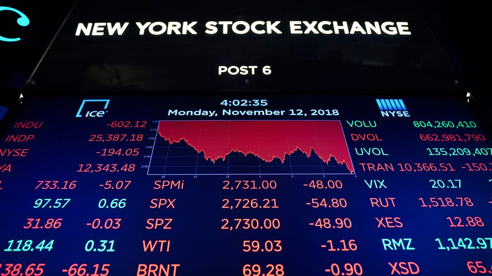
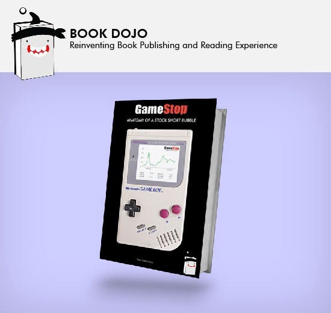

The Predictability of financial market events
From Homo Sapiens to Homo Connectors and investors


The direct access to financial markets by consumers who are individual online investors has increased the volume of trades and has according to one of my theories made these markets more predictable for highly smart high-frequency trading algorithms and more profitable for algorithmic market-making systems and markets operators but it probably made the markets more likely to rapidly experiences big and fast price movement like what’s happened for these stonks stock traded by individuals like you and me on platforms like Robinhood, Etoro, and their peers. The flash crash of may .. also happened rapidly but impacted almost all stocks of the SP500 leading market operators like NYSE to Activated the circuits breakers that are there as market safety systems.
Since this flash crash, regulators and markets participants have worked to fix the system and marketplaces like IEX was born and All other Exchanges have built trading system features, market rules, and order types that could prevent such events to happen.
The case of GameStop and other squeezed stocks can be seen as the flash crash of May but targeted to a specific stock which experiences major changes and these changes could, in turn, make algorithmic trading misbehavior but it is very likely that these algorithmic trading systems operated by the professional algorithmic investors will behave accordingly during the next ones that will happen because they live in algorithmic trading and are good at producing efficient trading algorithms. The unprotected persons are individual investors like you and me but in my case, I am as good as this professional algorithmic trader who knows the in and out of financial market technologies and could protect myself from such events but are you?
The stock that flash crashed was due to a large trade from Waddell & Reed for some opinions and others are saying that it came from a Swiss individual trader like me who was using algorithms and short selling. These recent stock squeezes were crowd-organized by a group of online influencers who used a social network platform as a medium for spreading information about a narrated digital transformation opportunity based on investing in GameStop. If you are a marketer like me, you may know the importance of storytelling and how it can help a message spread fast if hosted on platforms like Medium or Reddit and able to exploit the characteristics of the network effect that the Internet provides.
Whatever the causes of these financial crashes are, it is clear that one should be aware of investing in financial markets and should know that it is mostly about knowledge and less about gambling and that emotions could play and make a stock goes in a certain direction.
The strength and benefits of being in a community have again been proven by these short sales squeezes of the financial markets. Doing things together has helped us become the connected homo sapiens we are now and it will for sure play an ever more important role in the coming ever more connected world we will be living in. Then we should act on this fact right now and organize ourselves for us to benefit, I do have a lot of great ideas and solutions that could help us get these benefits and invest our effort safely and profitably into financial markets. Sharing my ideas with you through the medium of writing is one of these solutions.
Thank you for reading because I am almost sure that you will benefit from these cheap words above as well as from these ideas and solutions that I will be sharing in the future.
PS: this Book below is still in progress and almost ready months ago. I am just looking for a better way for you to experience it better and take profit from it because it is not about getting revenues from it only but mostly about YOU. If you are interested you can know more about the Book about Gamestop Squeeze here. more about Book Dojo Here
